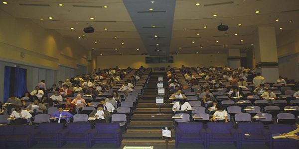

Pendaftaran mahasiswa baru Gelombang III
Pendaftaran:
06 Mei 2017 - 03 Juni 2017
Ujian: 06 - 07 Juni 2017
Pengumuman Hasil Ujian Masuk: 14 Juni 2017
Pendaftaran secara online klik disini
Informasi Pendaftaran Hubungi
No. HP: 08159272908, 081293860695
Matrikulasi: 29 Juli - 06 September 2017
Kuliah semester I: 23 September 2017-15 Februari 2018
Biaya Formulir Pendaftaran Rp. 500.000,-
Pendaftaran dapat melalui Online atau Langsung ke
Program Pascasarjana, Magister Manajemen Gd. D
Lantai 6 Universitas Trisakti
MM Kelas Reguler
Biaya Kuliah: Rp. 11.500.000,- / Semester
Biaya Matrikulasi: Rp. 1.000.000,- / Mata Kuliah
Jadual Perkuliahan: Senin sd Kamis (3 Kali Seminggu)
Pukul 17.00 sd 21.45 (2 Sesi)
MM Kelas Khusus
Biaya Kuliah: Rp. 16.000.000,- / Semester
Biaya Matrikulasi: Rp. 1.000.000,- / Mata Kuliah
Jadual Perkuliahan: Sabtu, Pukul 8.00 - 18.30 (4 Sesi)